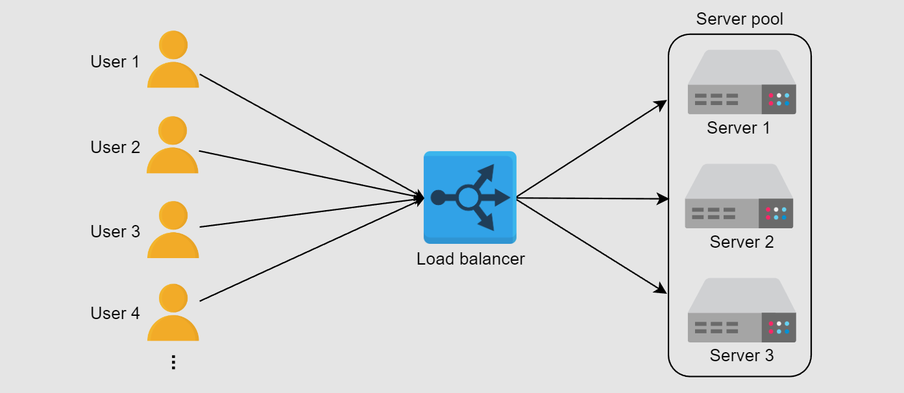

1. Google Cloud Load Balancing
Algorithm
A* Search Algorithm is a best-first search that finds the shortest path by combining the cost to reach a node (g) and a heuristic estimate to the goal (h). It selects the next node with the lowest total cost f = g + h. The heuristic guides the search efficiently toward the goal, balancing speed and optimality. [1].

A* Search Algorithm in Action [2]
Application
- Google data centers or servers act as nodes, with network links as edges carrying latency/load metrics.
- A* uses g(n) for actual path cost (like current latency/load) and h(n) as a heuristic (e.g., geographical distance) to estimate remaining cost.
- Paths are explored based on the lowest total cost f(n) = g(n) + h(n) using a min-heap.
- A* dynamically updates paths—avoiding overloaded servers (high g(n)) and prioritizing new or closer data centers (lower h(n)).

Google Cloud Load Balancing Architecture